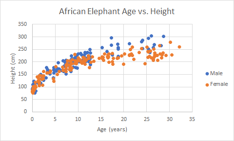

Marks
- Mark:
- Area --> The map of the United States
- Area --> Electoral Votes Needed to Win Total Box
- Area --> Nebraska's 5 electoral votes and Maine's 4 electoral votes
Channels
- Color
- Red represents the republican party and blue represents the democratic party
- This is a good mapping because the colors and the associated political party representation
widely known by United States representatives. Red and blue are also very distinguishable from one another.
- Shape
- Shapes represent the states in the United States
- This is a good mapping because viewers are able to see what political party won in what state without
requiring labels for each state.
- Horizontal Position
- Horizontal position represents the proportion of electoral votes
- This is a good mapping because viewers can see at a quick glance the halfway point as well as who is currently wininng.
Colormap(s)
- Categorical
- This is a good mapping because there are 2 colors (red and blue) that each resemble
a political party. The colors are also opposite so there is a clear distinction between the two.
Marks
- Mark:
- Points --> Each point represents a batted ball
- Lines --> Lines represent the type of hit (pop-ups, fly balls, line drives, ground balls)
Channels
- Position --> Both
- Horizontal position represents the exit velocity and vertical position represents launch angle
- This is good mapping because it allows for the analysis of both factors in a clear manner.
- Color
- Color represents the scoring value of a particular hit with purple being below average, white being avergae, and orange being above average.
The saturation of color represents where the score lies within the categories.
- The concept of mapping with color is good because it differentiates the scoring and allows for a trend to appear visually.
Unfortunately, the white and lighter purple and orange do not contract too well with the light gray background which can
make certain marks difficult to see.
Colormap(s)
- Divergent
- The color score representation is a divergent color map where two colors are used to indicates extremes of a range (purple and orange).
This is good mapping, but the neutral scoring color of white can be changed so that it does not blend into the background but still represent
the same score as it currently is.
- Sequential
- Within each color (purple and orange), the darker the color the farther the score is from the midpoint. This is a good mapping as it
is extremely visual and intuitive for veiwers to analyze accurately.
Marks
- Mark:
- Points --> Each point represents the age and height of an African elephant
Channels
- Position --> Both
- Horizontal position represents the age and vertical position represents height
- This is good mapping because it allows for the analysis of both factors in a clear manner.
- Color
- Color represents the gender of the elephants. Blue represents male elephants and orange represents female elepants
- The concept of mapping with color is good because it clearly differentiates the height and age factors based on gender.
The visualization shows that there is not a strong correlation between gender and height but as age increases, height does too.
Colormap(s)
- Categorical
- The colors chosen represent gender. It is easy to read the legend and determine which color represents which gender.